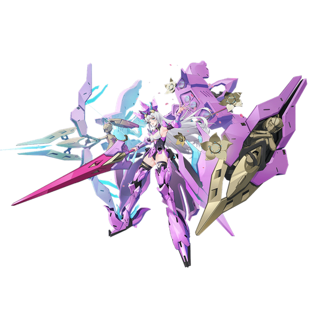

基本データ
- コスト
- 3.0
- 体力
- 未入力
- 赤ロック
- 33
- 動画
- 登録動画

Move Table
| 射撃 | 名称 | 弾数 | 威力 | 備考 |
|---|---|---|---|---|
| メイン射撃 | フラワーフェアリー | 5(7) | 228(84x3) | 3つのビットから同時射撃 |
| 満開時メイン射撃 | 436 | - | 追従ビットから追加射撃 | |
| 背面メイン射撃 | フラワーフェアリー&騎士の槍 | 371 | - | ビットに加えて本体もマシンガン連射 |
| 満開時背面メイン射撃 | 394 | - | 12連射+追従ビットから追加射撃 | |
| Nサブ射撃 | 赤花ガーディアン | 1 | 228 | 設置アシスト。メインキャンセル可能 |
| 満開時サブ射撃 | 338 | - | 左右から同時連射 | |
| 後サブ射撃 | 花粉ストーム | 1 | 472 | 誘導ミサイル一斉発射 |
| 満開時後サブ射撃 | 472 | - | ミサイル増加+追従ビットから追加射撃 | |
| 後メイン格闘 | 投げ槍 | 1 | 345 | 単発ダウンの投擲 |
| 満開時後メイン格闘 | 345/84x2 | - | ビットからの支援射撃が追加 | |
| Nサブ格闘 | エナジーリリース | 1 | 630 | 2連装照射ビーム |
| 満開時Nサブ格闘 | 705 | - | 爆風付き照射ビーム | |
| 後サブ格闘 | 赤花満開 | 100 | - | 射撃シールド付きの時限強化。シールド耐久400。 |
| 格闘 | 名称 | 入力 | 威力 | 備考 |
| 通常格闘 | 騎士の槍 | N | 624 | 1タップで最後まで出し切る |
| 通常時サブ射撃派生 槍と矢 | N→サブ射 | 600 | - | 凸2で解放。斬り抜け&スタンビーム |
| 満開時サブ射撃派生 槍と矢 | 733 | - | 高威力 | |
| 通常時サブ格闘派生 審判 | N→サブ格 | 626 | - | 満開ゲージを補充 |
| 満開時サブ格闘派生 審判 | 755 | - | 満開状態を解除しつつ拘束 | |
| 横格闘 | 騎士の槍 | 横NN | - | 727 |
| 通常時サブ射撃派生 槍と矢 | 横→サブ射 | 573 | - | N格と同様 |
| 満開時サブ射撃派生 槍と矢 | 719 | - | - | |
| 通常時サブ格闘派生 審判 | 横→サブ格 | - | 581 | |
| 満開時サブ格闘派生 審判 | 735 | - | - | |
| 前格闘 | ジャスティスアサルト | 前 | 480 | 掴み属性の変則ピョン格 |
| バーストアタック | 名称 | - | 威力 | |
| SB/FMD | 備考 | - | - | |
| バーストアタック | 新たな物語 | 948/844 | - | 満開状態になりつつ照射&一斉発射 |